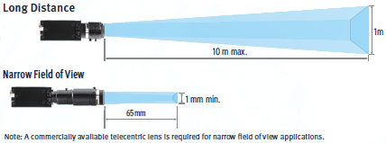

The sensor can be used in wet environments.
Building Automation
Industrial Automation
Power Automation & Safety


Bangladesh Distributor
FQ2
Smart Camera

Advanced inspection in a compact housing. Expanded performance and functionality. Camera, Communications, Software Tools, and Much More.
about this Product Family
Related Contents
- Sensors
- Vision Sensors / Machine Vision Systems
- Features
- Lineup
- Specifications
- Dimensions
- Catalog
last update: December 01, 2016
[Compact] All You Need is One
All You Need in One Package
IP67 Water Resistance
Flexible Cables
All cables from the camera are flexible.
This allows the Sensor to be used safely on moving parts.
Smart Click Connectors
Connection is made quick and easy with a clear, definitive click-into-place mechanism.
Quick and Easy Design and Installation
Easy Product Selection
All you need to do is select the camera based on the field of view and installation distance that you require. There is no need to select and purchase additional lighting or lenses. Furthermore, the time required to wire everything has been drastically reduced due to the low number of components.
Easy Installation
The camera and lighting have been integrated into a single unit, so only one camera mounting bracket is required. The Sensor comes with a multi-directional mounting bracket that can be attached on any of the four sides of the Camera. Axis alignment is also not required because the lighting and the camera are integrated into a single unit.
Easy Expansion [Up to 32 Cameras]
Just install the Cameras where you need them. No control panels are required to house the controllers. Triggers can be input for each Camera, so new Cameras can be added whenever required without having to worry about timing input design. Up to 32 Cameras can be set up from a single Touch Finder, so you do not need to worry about adding new monitors when you need more Cameras. This also allows you to smoothly respond to user requests for additional features.
[Extended Functions : Image Inspections] Easily Perform Both Inspection and Positioning
You can combine multiple inspection items to perform external inspections, positioning, and other tasks all from a single Sensor.
External Inspection
External inspection of ICs can be completed with a single Sensor. The position offset of the entire pallet before inspection can be adjusted on the image itself, which reduces the amount of work required to increase mechanical positioning accuracy.
Component Positioning
The Sensor can measure angles of rotation and other position information, so it can also be used for positioning. Inspections can also be performed for the number and size of holes along with the position information.
Incorporating the Best-selling Inspection Items from High-end Vision Systems
Searching
Shape Search III
The FQ2 now has Shape Search III that uses OMRON's unique techniques to search and match registered models at high speed. Shape Search III provides advanced robustness, which is critical on FA sites. High-precision and reliable position detection is possible without being affected by light interference and backgrounds.
Search
This is a standard search inspection item. This type of search is used to detect items like labels, identify shapes, or positions.
Sensitive Search
The model image can be automatically divided into small areas, so that tiny differences that cannot be detected with a normal search can be detected with large numerical differences.
Edge Pitch
Edge Pitch
The number of edges in a region can be counted.
Edge Position
This inspection item detects Edges and measures their positions.
Edge Width
This inspection item measures the width between edges.
Area Measurements, Color Measurements, and Defect & Foreign Matter Detection
Labeling
This inspection item counts how many labels there are of the specified color and size and measures the area or center position of the specified label.
Area
This inspection item measures the area and center position of the specified color.
Color Data
Inspections can be performed that compare the difference in color between the workpiece and a registered image of a good product to detect objects and foreign matter.(average color value)
You can also inspect for defects and foreign matter by looking at the color deviation.(color deviation)
Utility Items
360° Rotational Position Compensation
The correct position of workpieces with an inconsistent orientation can be measured through automatic detection of the offset of the workpiece in relation to a registered standard model.
Image Filters
A total of 11 different image filters are provided, including background suppression to help eliminate patterns that can result in unstable measurements, as well as dilation and erosion.
Calibration
If the dimensions or position of a workpiece is difficult to determine in a pixel display, you can convert the display unit so that it is easier to see.
[Extended Functions : OCR] New OCR Method to Quickly Read Characters without Dictionary Registration
Date Verification
Even if printing is distorted or unclear due to conveyor line conditions, a unique reading method with a built-in dictionary enables stable reading of characters.
Character Recognition and Label Position Inspection
Although previously performed as separate processes, character recognition and inspection tools can now both be performed with a single FQ2 Sensor.
This helps you reduce costs and save space.
OCR with Built-in Dictionary
OCR
The large amount of data in the built-in dictionary contains approximately 80 different fonts that are used on FA sites.Variations for worn characters, blurring, distortion, different backgrounds, and size changes have been included to enable stable and highly accurate reading with the built-in dictionary even for some variations in the characters.It is not necessary to set parameters to compensate for character contrast or positional offsetting.
Utilities That Make Daily Operation Easier
Verification
The character data being read can be verified against the character data registered in the master data. You can register up to 32 character strings in the master data and easily change the current master data with an external signal. With the FQ2-S4, you can also compare against the character strings read from bar codes or 2D codes.
Calendar Function
The calendar function eliminates the need to set the date and best-before date manually every day. You can also set the dates according to the dates set to the printer by using the command sent from the external system in addition to from the Touch Finder for the FQ2.

Registration in Model Dictionary
Non conventional characters can be added to the dictionary.Special fonts are difficult to read with the default settings, but add them to the dictionary and the FQ2 provides reliable readings.
Logging Images and Reading Data
The inspected images and reading results can be temporarily saved in the sensor. Additionally, up to 10,000 images and 10,000,000 reading results can be saved in a 4-GB SD card. You can select logging both OK and NG results or only NG results to aid in traceability.
Boundary Correction
Dark areas around characters, such as bar codes, are removed to achieve stable reading.
[Expanded Functions : Code Reader] Read Any of 15 Types of Codes from Paper Labels to Direct Marking
Code and Character Verification
OCR and Code Reading inspection items can be combined to read codes and verify them against character strings all within the FQ2.
No programming of external devices is required.
Reading Direct Marking Codes
It has become common to manage information by directly marking codes on products. However, differences in materials often causes instability when reading the printed characters.The FQ2 achieves stable reading with unique functionality designed just for DPM.
Print Quality Grading Function
The function to evaluate the quality of a 2D code (DataMatrix) enables an in-line check of the relative quality change and the parameter where the change occurred.

Note: This function evaluates relative change in code quality and does not give absolute grading
The FQ2-S4 with sensor version 2.20 or later provides this function.
The FQ2-S4 with sensor version 2.20 or later provides this function.
Types of Filtering
You can apply up to three of the four unique filters developed by OMRON in the desired order to remove printing irregularities and noise, in order to achieve a stable reading.
Combining Filtering
Erosion and dilation can be combined to connect dots without changing the dot thickness.
Retry function
Code Readers must be able to read codes even for poor printing conditions. You can automatically retry reading while changing the exposure time and other reading conditions, even for changing workpieces or environments, to enable a stable reading.
1 Retrying the Specified Number of Times with the Same Conditions
Reading is performed for the specified number of times for the same scene.
2 Retrying While External Trigger Is Input
Reading is performed until successful, as long as an external level trigger is input.
3 Retrying While Changing the Shutter Speed
Reading is performed for the same scene while changing the exposure time in stages.
4 Retrying While Changing the Reading Conditions
When reading DPM codes, inconsistencies in printing conditions can result in NGs if reading is performed with only one set of reading settings.
The FQ2 allows you to register up to 32 sets of reading conditions as scenes and retry reading while changing the scenes in order.
The system automatically determines the scenes with the highest usage rates and changes the order to start with them to flexibly handle changes in reading conditions. Of course you can specify a fixed order if required.
QR code is the registered trademark of DENSO WAVE.
[Versatile] A Lineup That Fits a Wide Range of Equipment
Sensor
We offer a diverse lineup of Sensors so that you can choose the one with the perfect field of view and installation distance for your needs.
Integrated Sensor [Color] [Monochrome]
Seamless Field of View Variations
All-in-one Sensors tend to be limited in field of view variations, but we offer a lineup ranging from 7.5 mm up to 240 mm to meet your needs.
Wide View Sensors -- Perfect for Tight Spaces
A side-view wide-angle camera takes images and performs inspections across a wide area, even if the camera is close to the workpiece.
Perfect for mounting the sensor in locations with limited space. This also enables the Sensor to be installed alongside an assembly line without protruding in order to perform inspections from the side of the conveyor belt.
Sensors with C-mount lens [Color] [Monochrome]
The Sensors with C-mount lens enable freedom of lens selection for long distances over 1 m and narrow fields of view under 1 mm that are not covered by our integrated Sensors.This type of Sensor is also useful when you want to use external illumination.

Lighting Examples
Communication Interfaces
The Sensor includes communication interfaces for compatibility with a wide range of host devices. This helps reduce the design work required for data communications between the Sensor and a PLC.
Note: The type of communications interface depends on the model of the Sensor.
Refer to Catalog for details.
PLC Link
PLC link greatly reduces the amount of time and work that is required to create ladder programs.
FINS
OMRON's exclusive FINS/TCP communications interface can be used to connect to low-cost OMRON PLCs. With this communications interface, no communications controls are required to process the sending and receiving of complex TCP packets. You get faster, simpler connections to OMRON PLCs.
EtherNet/IP™
EtherNet/IP™ communications, a standard widely used in communications systems in factories around the world, is also supported. This communication interface enables simple and easy connections to a wide range of EtherNet/IP™ devices, including OMRON PLCs.
I/O Expansion Units
Our expansion units enable expansion to up to three times the number of I/O connections. This enables the output of individual judgement results for each inspection, a feature that has been highly requested.
RS-232C Communications Unit
This Sensor Data Unit supports standard RS-232C communications.
Operation Interfaces
You can choose the operation interface and monitor size to suit your application.

・Microsoft .NET is either a registered trademark or trademark of Microsoft Corporation in the United States and/or other countries.
・EtherNet/IP™ is the trademark of ODVA.
last update: December 01, 2016